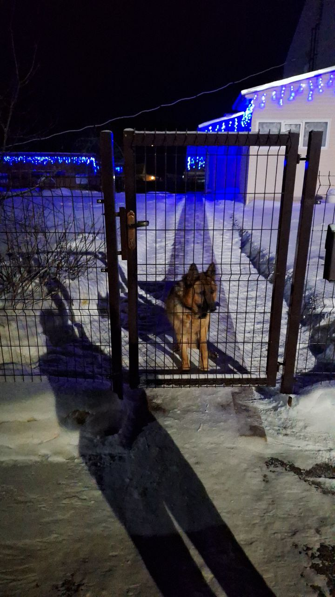

Немецкая овчарка — собака, полная энергии и жизненных сил.
Чтобы она оставалась здоровой и счастливой, ей нужен не просто хозяин,
а ответственный руководитель и друг. Вот основные столпы правильного ухода.
1. Физическая активность: Движение — жизнь!
Этой собаке недостаточно простой прогулки вокруг дома. Ей нужны:

- Ежедневные активные прогулки: Не менее 1.5-2 часов в день.
- Интеллектуальные игры: Поиск спрятанных игрушек, апортировка.
- Спорт: Аджилити, фристайл, вейтпуллинг —
отличный способ выплеснуть энергию и укрепить связь с хозяином.
Помните: уставшая овчарка — счастливая и послушная овчарка!
2. Питание: Основа здоровья
Крепкий костяк и мощная мускулатура требуют качественного "топлива".
- Выбор корма: Высококачественный сухой корм супер-премиум
класса для активных пород или сбалансированная натуральная диета
(только по согласованию с ветеринаром!).
- Осторожно с весом! Немецкие овчарки склонны
к дисплазии суставов. Лишний вес создает критическую нагрузку на лапы.
- Режим: Кормите взрослую собаку 2 раза в день после прогулки.
3. Шерсть и уход за ней
Знаменитая "линька" у овчарок происходит два раза в год очень обильно,
и в этот период вычесывать питомца нужно ежедневно.
- Вычесывание: В обычное время — 2-3 раза в неделю.
Используйте пуходерку и фурминатор во время линьки.
- Купание: Не чаще 3-4 раз в год, чтобы не смывать
защитный жировой слой с кожи. Исключение — сильное загрязнение.
4. Здоровье: На что обращать внимание
Порода, к сожалению, имеет предрасположенность к некоторым заболеваниям.
Регулярно посещайте ветеринара и обращайте внимание на:
- Дисплазия тазобедренного и локтевого суставов.
- Проблемы с ЖКТ: Заворот желудка (очень опасное состояние!).
- Аллергии и кожные заболевания.